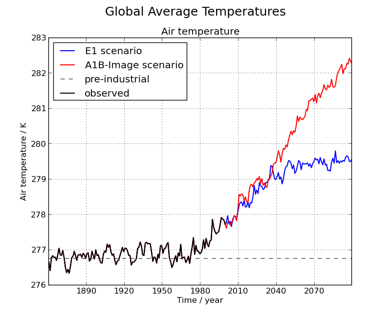

Iris 0.9
Produces a time-series plot of North American temperature forecasts for 2 different emission scenarios. Constraining data to a limited spatial area also features in this example.
The data used comes from the HadGEM2-AO model simulations for the A1B and E1 scenarios, both of which were derived using the IMAGE Integrated Assessment Model (Johns et al. 2010; Lowe et al. 2009).
Johns T.C., et al. (2010) Climate change under aggressive mitigation: The ENSEMBLES multi-model experiment. Climate Dynamics (submitted)
Lowe J.A., C.D. Hewitt, D.P. Van Vuuren, T.C. Johns, E. Stehfest, J-F. Royer, and P. van der Linden, 2009. New Study For Climate Modeling, Analyses, and Scenarios. Eos Trans. AGU, Vol 90, No. 21.

"""
Global average annual temperature plot
======================================
Produces a time-series plot of North American temperature forecasts for 2 different emission scenarios.
Constraining data to a limited spatial area also features in this example.
The data used comes from the HadGEM2-AO model simulations for the A1B and E1 scenarios, both of which
were derived using the IMAGE Integrated Assessment Model (Johns et al. 2010; Lowe et al. 2009).
References
----------
Johns T.C., et al. (2010) Climate change under aggressive mitigation: The ENSEMBLES multi-model
experiment. Climate Dynamics (submitted)
Lowe J.A., C.D. Hewitt, D.P. Van Vuuren, T.C. Johns, E. Stehfest, J-F. Royer, and P. van der Linden, 2009.
New Study For Climate Modeling, Analyses, and Scenarios. Eos Trans. AGU, Vol 90, No. 21.
"""
import os.path
import numpy
import matplotlib.pyplot as plt
import iris
import iris.coords as coords
import iris.plot as iplt
import iris.quickplot as qplt
import iris.analysis.calculus
import matplotlib.dates as mdates
def main():
# Load data into three Cubes, one for each set of PP files
e1 = iris.load_strict(iris.sample_data_path('E1_north_america.nc'))
a1b = iris.load_strict(iris.sample_data_path('A1B_north_america.nc'))
# load in the global pre-industrial mean temperature, and limit the domain to
# the same North American region that e1 and a1b are at.
north_america = iris.Constraint(
longitude=lambda v: 225 <= v <= 315,
latitude=lambda v: 15 <= v <= 60,
)
pre_industrial = iris.load_strict(iris.sample_data_path('pre-industrial.pp'),
north_america
)
pre_industrial_mean = pre_industrial.collapsed(['latitude', 'longitude'], iris.analysis.MEAN)
e1_mean = e1.collapsed(['latitude', 'longitude'], iris.analysis.MEAN)
a1b_mean = a1b.collapsed(['latitude', 'longitude'], iris.analysis.MEAN)
# Show ticks 30 years apart
plt.gca().xaxis.set_major_locator(mdates.YearLocator(30))
# Label the ticks with year data
plt.gca().format_xdata = mdates.DateFormatter('%Y')
# Plot the datasets
qplt.plot(e1_mean, coords=['time'], label='E1 scenario', lw=1.5, color='blue')
qplt.plot(a1b_mean, coords=['time'], label='A1B-Image scenario', lw=1.5, color='red')
# Draw a horizontal line showing the pre industrial mean
plt.axhline(y=pre_industrial_mean.data, color='gray', linestyle='dashed', label='pre-industrial', lw=1.5)
# Establish where r and t have the same data, i.e. the observations
common = numpy.where(a1b_mean.data == e1_mean.data)[0]
observed = a1b_mean[common]
# Plot the observed data
qplt.plot(observed, coords=['time'], label='observed', color='black', lw=1.5)
# Add a legend and title
plt.legend(loc="upper left")
plt.title('North American mean air temperature', fontsize=18)
plt.xlabel('Time / year')
plt.grid()
iplt.show()
if __name__ == '__main__':
main()